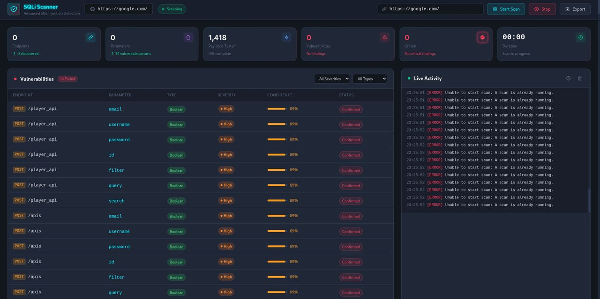
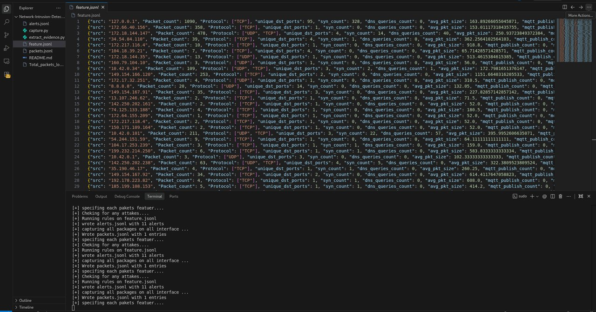

Linux
Advanced
$ whoami
Cybersecurity student.
I build security tools, scan networks and break things in labs, then write down what I learned. Cyber Domain Lead at Peak Craft, studying for Security+.
$ cat status.txt role Cyber Domain Lead, Peak Craft training INSA Cybersecurity Summer Camp studying CompTIA Security+ (SY0-701) school B.Sc. IT, Hawassa University led 12+ members, 4 labs, CTF practice open_to internships, collaboration $ _
I taught myself Linux, networking and Python, then went deeper through the INSA Cybersecurity Summer Camp, where my team built an IoT-aware IDS and a malware detection system.
I learn by building: scanners, detectors and labs I can break safely. Now I lead the cyber team at Peak Craft, running sessions and CTF practice, and I'm preparing for CompTIA Security+.
Advanced

Intermediate
Advanced

Intermediate

Intermediate

Beginner

Advanced
Beginner

Intermediate

Beginner

Python scanner that fires 20+ automated payloads at web forms and URL parameters and analyses responses to flag SQL injection. Tested across 10+ input endpoints.
What I learned: Response patterns, not just error messages, reveal which parameters are injectable.

Two scanners in one: an Nmap wrapper for thorough scans, and a raw-socket scanner built to learn TCP internals.
What I learned: Building the scan from raw sockets made the TCP handshake concrete.

Intrusion detection for IoT networks that combines host and network monitoring. Detected 70% of simulated intrusions, analysed 700+ packets including MQTT, and sent email alerts.
What I learned: Detection rules need tuning, because coverage and false alarms pull against each other.

Voice-controlled assistant that listens for commands, runs system actions, searches the web and answers with speech.
What I learned: Voice input must be mapped to safe actions and handle misheard commands.
Looking for an internship or a security project to join? Send a message.